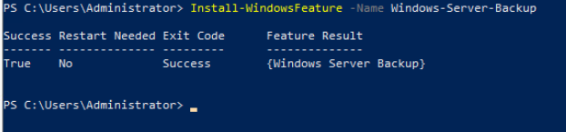

Domain controllers can be backed up only after Windows Server Backup is installed. You can install the tool using the Server Manager or by running commands on Windows PowerShell.
Method 1: Installing Windows Server Backup Using the Server Manager
- Log in to the local host as Administrator.
- Choose Start > Server Manager.
- Click Add roles and features.
- In the displayed dialog box, click Next.
- Select Role-based or feature-based installation and click Next.
- Choose Select a server from the server pool and click Next.
- Select Windows Server Backup and click Next.
- Click Install.
Method 2: Installing Windows Server Backup by Running Commands on Windows PowerShell
- Enter Windows PowerShell in the search box.
- Right-click Windows PowerShell and choose Run as administrator from the shortcut menu to enable Windows PowerShell.
- Run the following command to perform the installation:
Install-WindowsFeature -Name Windows-Server-Backup
The command output is as follows (Windows Server 2016 is used as an example):
